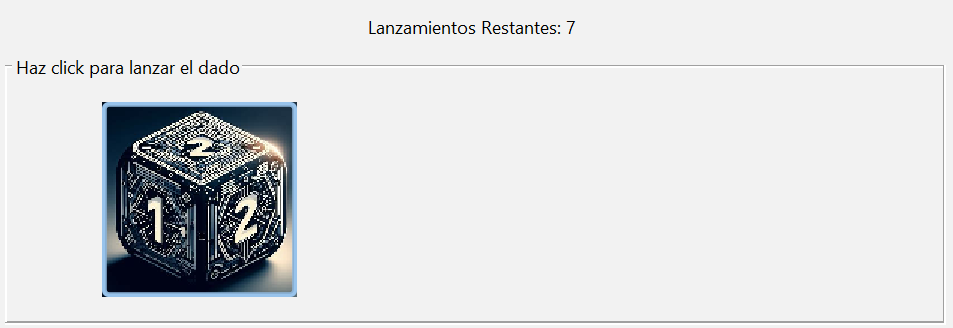
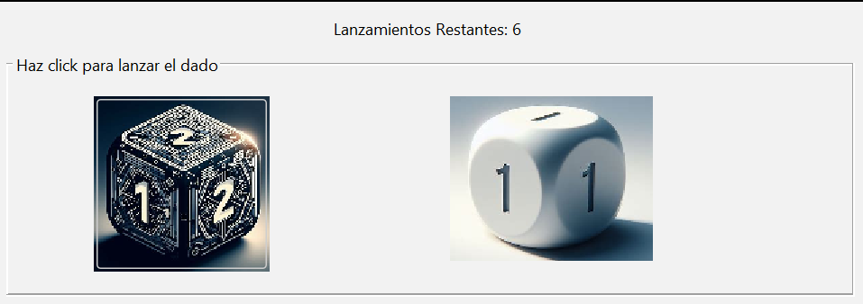
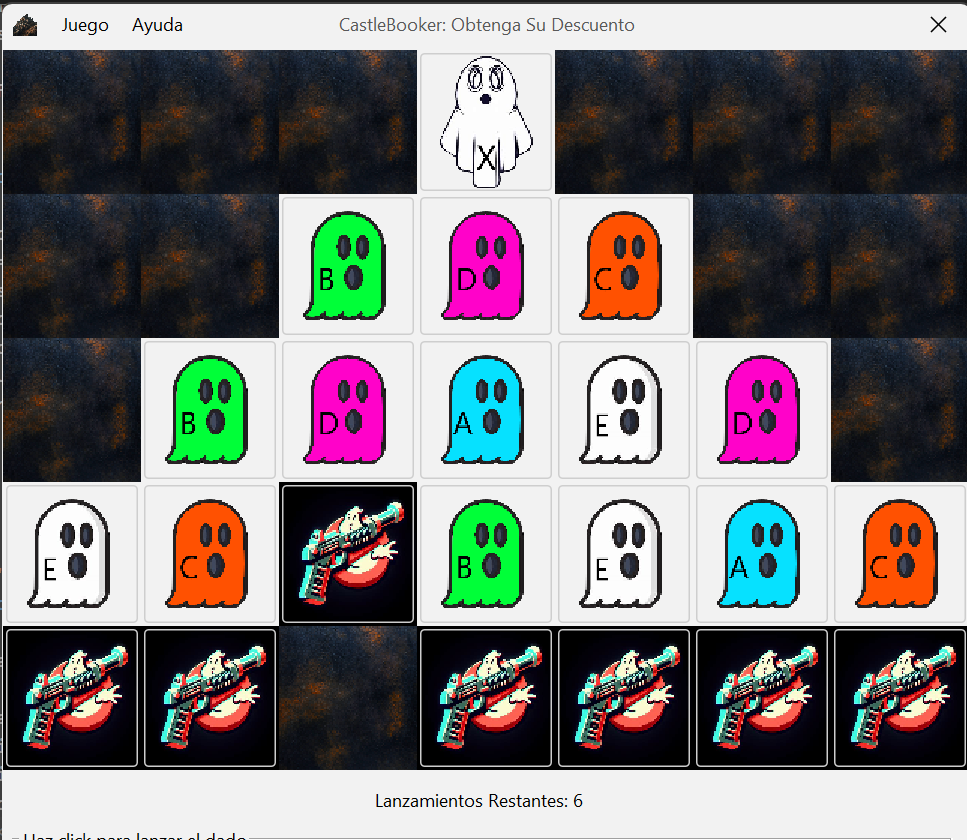
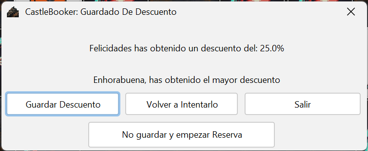
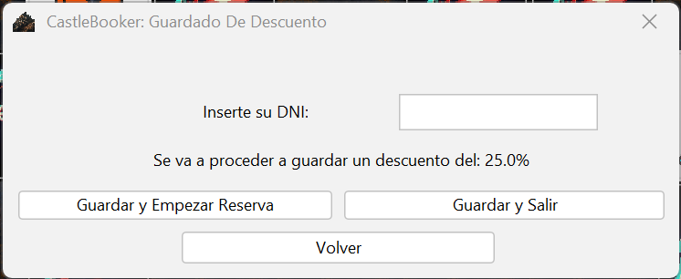

Funcionamiento del Juego y obtención de descuento
La aplicación proporciona una bonificación de bienvenida, la cual pude ser obtenida tras jugar al Juego
Dicha bonificación puede ser del 10% o del 25%
Para ello se explicará el funcionamiento básico del juego y se guiará por el proceso de Guardado
Atencion:El juego no obliga a reservar castillo, si obtienes descuento este se almacenará para un futuro
Objetivos y Funcionamiento del juego
- Objetivos
El objetivo del juego es desplazar los cazafantasmas expresados por la siguiente imagen:

A las posiciones de los fantasmas, para ello dispones de 7 lanzamientos de dados, el cual te va a perimitir
mover a uno de los cazafantasmas tantas casillas como marque el valor obtenido del dado
Si con los 7 movimientos consigues derrotar a un fantasmas de cada tipo, menos al marcado con X, marcados con letras,
conseguiras un descueton del 10% y si además de completar el objetivo anterior, consigues derrotar al lider
, marcado con X, el descuento a obtener será del 25%
- Funcionamiento
Se explicará el funcionamiento del juego con una partida a este:
- Clicar sobre el icono del dado, esto hará que se lance el dado y se muestre, el resultado obtenido

También se actualizará los lanzamientos restantes

- Elegir el cazafantasmas a mover y clicar sobre este, la aplicación movera el icon verticalmente, tantas casillas como han
salido en el dado y eliminará al fantasma sobre el que cae

- Repetir pasos anteriores hasta acabar los movimientos o hasta conseguir acabar con el líder (X) y un fantasma de cada tipo (Descuento del 25%)
Si no consigues ningún descuento, se te informará y el juego se reiniciará
Proceso de Guardado del Descuento
Una vez obtenido un descuento en el juego se abrirá una ventana, en la cual podras eligir que deseas hacer:

- Volver a intentarlo reiniciara el juego, en caso de que se desee volver a jugar
- Salir cerrara la venta actual y la ventana del juego, se volverá a mostrar la ventana principal
- No guardar y empezar reserva, cerrara el juego y empezará el proceso de reserva
- Guardar Descuento te permitirá guarda el descuento obtenido en el juego, pero hay que tener en cuenta que una vez guardado no se podrá obtener otro
Si se decide guardar, primero tendrás que proporcionar su fecha de nacimiento, solo se permite obtener descuento a personas mayores de edad

Una vez verificada su edad, podrá proporcionar su DNI, si no posee ningún descuento se guardará tu DNI y el decuento obtenido

Si decides empezar a reservar desde esta ventana, no tendrás que proporcionar tu DNI, ni tu fecha de nacimiento durante el proceso de Reserva
Nota:Cualquier error será notificado con una ventan emergente